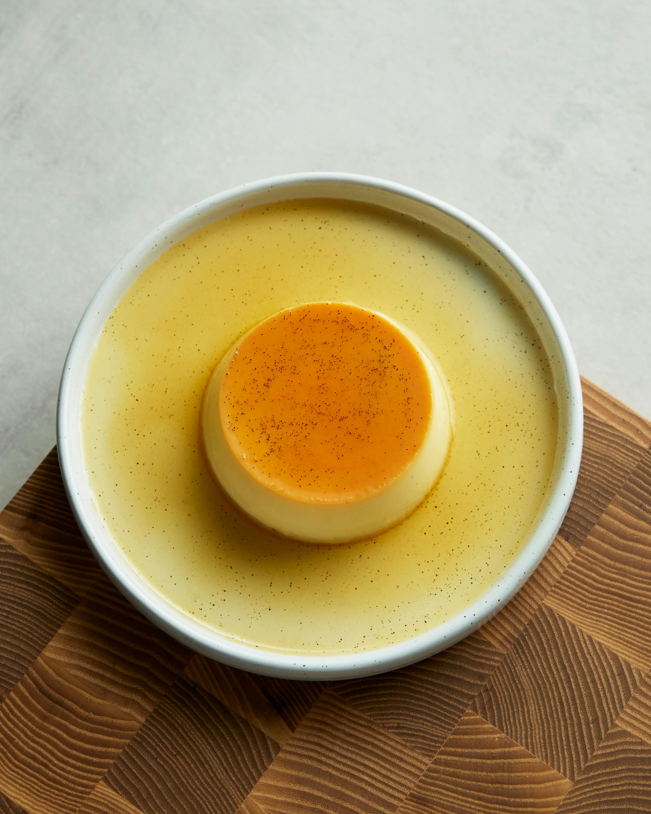

Kaymaklı Muhallebi Tarifi

İçindekiler:
- 1 Litre Süt
- 3 Yemek Kaşığı Mısır Nişastası
- 1 Su Bardağı Toz Şeker
- 1 Paket Vanilin
- 200g Kaymak
Yapılışı:
- Süt, şeker ve nişastayı bir tencereye koyun ve karıştırarak pişirin.
- Karışım kaynamaya başladığında vanilin ekleyin ve ocaktan alın.
- Kaymağı ekleyip mikserle çırpın ve kaselere paylaştırın.
- Buzdolabında 2 saat dinlendirdikten sonra servis edin.
Geri Dön